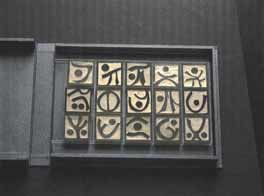

Artist and Gallery Listings Arts Organizations and Grants Articles Stories and Poems Staff
|
The American Center for Artists is an electronic magazine that focuses on the biography and autobiography of famous and emerging writers, painters, sculptors, musicians, and other artists. It also presents new and reprinted works by these artists as well as articles about them. James P. White - Editor Jules White - Art Editor / Webmaster Book: I Am Everyone I Meet - Random Encounters on the Streets of Los Angeles
LOS ANGELES TIMES BOOK REVIEW
By Susan Salter Reynolds
June 7, 2009
Tabloid Books: 134 pp. paper
excerpts:
"In this collection of brief encounters with strangers on the streets
of Los Angeles, James P. White proves the poverty of that legacy. He
talks with people at bus stops, in lines, over counters. He talks with
homeless people, elderly people, travelers and the urban overwrought:
"Seeing the world as filled with strangers who threaten us or seeing
it as filled with other people who are like us and who interest us,
makes a difference."
...
The people White talks to, because it is Los Angeles, come from all
over the world. This makes the vignettes even more fascinating -- the
cab driver from Moscow who is the first person White has ever met who
is nostalgic for communism, the Latino man who has learned Japanese
while working in a Japanese restaurant, the Arab who lived in Israel
and proudly calls himself an Israeli Jew. "It is not so unusual," he
tells White. Not unusual but astounding, and fascinating. There is the
young man who looks so much like Jesus -- White learns that it can be
an annoying burden to look like Jesus. Why wouldn't anyone want to
look like Jesus? White wonders. "Why does this man have that face?"
White has an instinct for gentleness. A homeless man on a bus shows
him the contents of his bag. He wonders about things, about people's
lives. He is interested. This interest has a different quality than
caring or wanting things to be different.
White set out years ago to write a spiritual history of Los Angeles.
Not long into the project he realized "just how easily it could fail
under its own weight." So he wrote this book instead. Something
similar in many ways, but different."
| 
This one of a kind book was designed and constructed at the Ziggurat Press by Walter Feldman in the spring of 2002. It is one of a series that searches for meaning beyond language. It has been suggested by some that one day a new kind of Rosetta stone may be found that will reveal the complete meaning. "One
of a Kind Book" by Walter
Feldman
Perspective in Motion by Ryan Jimenez (BEVERLY HILLS, CA)—Artist Christopher Jules White explores the intersections of vivid color, light and form in PERSPECTIVE IN MOTION, a collection of photo collages and paintings on display at the Gregory Way Gallery in Beverly Hills. The exhibition of the Texas native's work opens with a special reception at the Gallery on Saturday, March 26 from 7:00 p.m. until 9:00 p.m. and runs through April 30, 2011. View the show's online catalog.
Abel Juarez's Cities
Abel Juarez, folk artist from Michoacan, creates imaginative buildings, houses, and churches drawn from his experiences in Mexico and in the U.S. His small scale sculptures depict his impressions of real life. They are distinguished by bright colors and lighting that create moods of celebration. One gallery owner calls them "Happy" pieces.
First Los Angeles Brazilian Film Festival Film Review: The Magnate Film Review: The Grain Film Review: Adagio Sostenuto Two for the Show - an article about Academy Award Winners Robert Pirosh and Harry Brown by James P. White - Excerpt - I like words. I like fat buttery words such as ooze, turpitude, glutinous, toady. I like solemn, angular, creaky words such as straitlaced, cantankerous, pecunious, valedictory. I like spurious, black-is-white words such as mortician, liquidate, tonsorial, More...
|